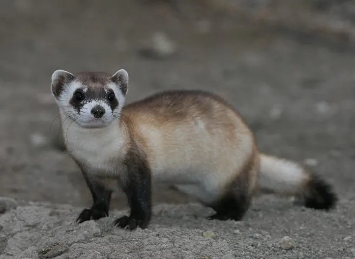

哺乳动物 · 动物界
黑足鼬 Mustela nigripes

北美洲唯一的本土鼬类，四肢末端黑色，几乎完全依赖草原犬鼠生存，曾于野外灭绝，靠人工繁育与重引入才重新建立种群。
- 分类
- 门脊索动物门纲哺乳纲目食肉目科鼬科属鼬属
- 栖息环境
- 北美大平原的短草草原，与草原犬鼠洞群紧密依存
- 地理分布
- 美国蒙大拿、南达科他、亚利桑那、怀俄明等地及墨西哥北部重引入点
- 保护级别
- IUCN 濒危（EN）；美国联邦濒危物种
物种志
黑足鼬体形细长，成年体长约 38–60 厘米，尾长 11–15 厘米，体重 650–1400 克，雄性略大。毛色自额部沿背脊为黄褐色，头顶、眼罩、四肢和尾端呈深褐色至黑色，足部黑色尤其醒目，故得名“黑足”；面部有一圈浅色毛，喉胸近白色。它的耳大而圆，听觉灵敏，用以在黑暗的洞道中定位猎物。
黑足鼬是北美草原的特有物种，几乎完全栖居于草原犬鼠的洞群中，洞穴既是住所也是猎场，食物中九成以上为草原犬鼠。它们多在夜间活动，凭嗅觉和听觉在洞道内捕猎，冬季不冬眠但活动减少。20 世纪因草原犬鼠被大规模毒杀和鼠疫流行，黑足鼬于 1979 年前后野外灭绝，仅剩圈养个体；此后美国与加拿大开展繁育和重引入，在多个地点重建了小型野生种群，但种群仍高度依赖持续管理。
形态与习性
- 体长约 38–60 cm，尾长 11–15 cm
- 体重约 650–1400 g，雄性较大
- 食性草原犬鼠为主，约占食物的九成，也食小鼠与昆虫
- 繁殖春季交配，孕期约 41–45 天，每胎 1–6 仔
- 寿命野外约 3–6 年，圈养可达 8 年
- 栖息方式几乎完全生活在草原犬鼠的洞道系统中
- 种群现状野外个体约数百只，全部来自人工繁育与重引入
趣味知识
- 1979 年前后黑足鼬在野外被宣告消失，最后一批个体被捕获用于繁育。
- 它的食物九成以上是草原犬鼠，没有犬鼠洞群几乎无法生存。
- 重引入个体要先在围栏中学会躲避郊狼和猫头鹰，才能放归草原。